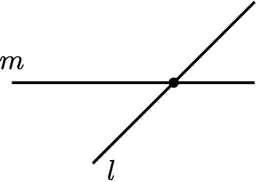
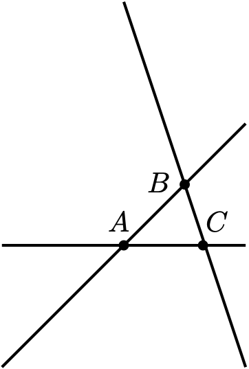
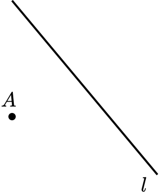

3 Mathematical Proofs
In addition, proofs can help us to understand complicated concepts. By breaking down an argument into small, manageable steps, we can see how each piece fits together to form a larger whole.
Finally, proofs can be aesthetically pleasing. There is a certain beauty in a well-constructed argument, just as there is beauty in a finely crafted piece of art.
We now discuss valid arguments, inference rules, and various methods of proof including direct proofs, indirect proofs, proof by contrapositive, and proof by cases.
An argument is defined as a statement \(q\) being asserted as a consequence of some list of statements \(p_1, p_2, ...,p_k\). The statements \(p_1, p_2, ..,p_k\) are called the premises (or ) hypothesis of the argument; and the statement \(q\) is called the conclusion.
Definition 3.1 A statement \(q\) is called a propositional consequence of statements \(p_1, p_2, ..., p_k\) if and only if the single statement \((p_1 \land p_2 \land \cdots \land p_k) \rightarrow q\) is a tautology.
Example 3.1 Test the validity of the following arguments.
\[\begin{array}{ccc} \begin{array}{l} p \longleftrightarrow q \\ q \lor r \\ \neg \, r \\ \hline \therefore \, \neg \, p \end{array} & \qquad & \begin{array}{l} p \lor q \\ \neg \, q \rightarrow r \\ \neg \, p \lor \neg \, r \\ \hline \therefore \, \neg \, p \end{array} \end{array}\]
Solution. By Definition 3.1, the arguments can be shown to be valid or not by constructing a truth table for the following statements
- \([(p \longleftrightarrow q)\land (q \lor r ) \land (\neg \, r )] \longleftrightarrow (\neg p)\)
- \([(p \lor q)\land (\neg \, q \rightarrow r)\land (\neg \, p \lor \neg \, r)] \longrightarrow (\neg p)\)
and determining whether or not these are tautologies. The reader should verify that the first statement is not a tautology, and so the argument in (a) is not valid. What about the second statement?
3.1 Logical Discourse
The pattern of logical discourse goes as follows:
- A collection of primitive (undefined terms) is given.
- A collection of axioms (unproven statements) about the primitive terms is also given.
- Then all of the terms of the discourse are defined by means of the primitive terms or by previously defined terms that were defined using primitive terms.
- All other statements in the system are logically deduced from the axioms. These are the theorems of the system.
In mathematical exposition, we often communicate by distinguishing different types of theorems. For example, a theorem is sometimes called a result. There is an air of humility in calling a theorem merely a result. Other alternatives to theorem are listed below.
Fact. A very minor theorem, but important enough to number and refer to latter, i.e., the statement \(1+1=2\) is a fact.
Proposition. Also a minor theorem, but more important (usually more general) than a fact –but not as prestigious as a theorem.
Lemma. Often a technical theorem, which is used to help prove another more important theorem. Stating lemmas, before proving a difficult complicated theorem, is functional.
Claim. Similar to lemma but less formal. A claim will often be referred to only a small number of times, whereas a lemma may be referenced many times and is a useful result in itself. For example, stating a claim inside the proof theorem is a great way to help organize key steps in a proof.
Corollary. An important enough result to state on its own whose proof requires a previously proved theorem as its main step.
3.2 Writing Proofs
3.2.1 Direct Proofs
Basically, direct proofs are proofs that do not use the Law of Excluded middle tautology. In each of the following examples, we use inference rules to write a proof in column format – and we also write a paragraph proof.
Example 3.2 Given the three previously proven theorems:
- Theorem 1: \(p\rightarrow q\),
- Theorem 2: \(q\rightarrow r\), and
- Theorem 3: \(r\rightarrow s\).
We can now prove the next theorem. \[ \text{Theorem: If $p$ then $s$.} \]
Solution. We begin with a column proof.
| Conclusions | Justifications | |
|---|---|---|
| \(p\) | premise | |
| \(p\rightarrow q\) | theorem 1 | |
| \(q\) | steps 1 and 2, modus ponens | |
| \(q\rightarrow r\) | theorem 2 | |
| \(r\) | steps 3 and 4, modus ponens | |
| \(r\rightarrow s\) | theorem 3 | |
| \(s\) | steps 5 and 6, modus ponens |
We end with a paragraph proof.
Assume \(p\). By Theorem 1, we know \(q\), and so by Theorem 2, we now have \(r\). Hence by Theorem 3, we have \(s\) as needed.
Example 3.3 Prove: if \(p\lor q\) and \(\neg \, q\), then \(p\).
Solution. We begin with a column proof.
| Conclusions | Justifications |
|---|---|
| \(\neg q\) | premise |
| \(p\lor q\) | premise |
| \(p\) | disjunctive syllogism |
We end with a paragraph proof:
Assume \(\neg q\) and \(p\lor q\). We can not have \(q\) and \(\neg q\), thus \(p\) follows immediately.
Example 3.4 Assume the following:
- Definition: \(a\) is said to be \(b\) iff \(r\rightarrow s\),
- Axiom 1: \(r\rightarrow q\),
- Theorem 1: If \(a\) is \(c\) then \(q\rightarrow t\),
- Theorem 2: \(t\rightarrow s\).
Prove the following theorem. \[ \text{Theorem: If $a$ is $c$ then $a$ is $b.$} \]
Solution. We begin with a column proof.
| Conclusions | Justifications |
|---|---|
| \(a\) is \(c\) | premise |
| if \(a\) is \(c\) then \(q\rightarrow t\) | theorem 1 |
| \(q\rightarrow t\) | steps 2 and 3, modus ponens |
| \(r\) | premise |
| \(r\rightarrow q\) | axiom 1 |
| \(q\) | steps 4 and 5, modus ponens |
| \(t\) | steps 3 and 6, modus ponens |
| \(t\rightarrow s\) | theorem 2 |
| \(s\) | steps 7 and 8, modus ponens |
| \(r\rightarrow s\) | steps 4 through 9 |
| \(a \text{ is } b\) | definition of \(a\) is \(b\) |
We end with a paragraph proof:
Assume \(a\) is \(c\). By Theorem 1, we have \(q\rightarrow t\). To prove that \(a\) is \(b\) we assume \(r\). Then by Axiom 1, we have \(q\), which now yields \(t\). By Theorem 2, it follows that \(s\). Therefore we have shown \(r\rightarrow s\) as needed.
3.2.2 Indirect Proofs
Example 3.5 Given the two previously proven theorems:
- Theorem 1: \(\neg q\rightarrow r\),
- Theorem 2: If \(r\) then either \(\neg p\) or \(q\).
Prove the following theorem. \[ \text{Theorem: $p\rightarrow q.$} \]
Solution. We begin with a column proof.
| Conclusions | Justifications |
|---|---|
| \(p\) | premise |
| \(q \lor \neg q\) | excluded middle |
| \(\neg\) | premise |
| \(\neg q\rightarrow r\) | theorem 1 |
| \(r\) | steps 3 and 4, modus ponens |
| \(r\rightarrow (\neg p \lor q)\) | theorem 2 |
| \(\neg p \lor q\) | steps 5 and 6, modus ponens |
| \(p\land \neg q\) | steps 1 and 3 |
| \(\neg(\neg p)\land \neg q\) | double negation |
| \(\neg (\neg p \lor q)\) | step 9, De Morgan |
| \((\neg p \lor q) \land \neg (\neg p \lor q)\) | steps 7 and 10, contradiction |
| \(q\) | steps 3 and 11, indirect proof |
We end with a paragraph proof:
Assume \(p\). Suppose \(\neg q\) for otherwise we are finished. Then \(r\) by Theorem 1. By hypothesis we cannot have \(\neg p\), and so by Theorem 2, we have \(q\) as needed.
Example 3.6 Prove: if \(p\leftrightarrow q\) and \(q\rightarrow \neg \, p\), then \(\neg \, p\).
Solution. We begin with a column proof.
| Conclusions | Justifications |
|---|---|
| \(p\leftrightarrow q\) | premise |
| \((p\rightarrow q) \land (q\rightarrow p\) | definition of \(\leftrightarrow\) |
| \(p\rightarrow q\) | simplification |
| \(q\rightarrow \neg p\) | premise |
| \(p\lor \neg p\) | excluded middle |
| \(p\) | premise |
| \(q\) | steps 3 and 6, modus ponens |
| \(\neg p\) | steps 4 and 7, modus ponens |
| \(p\land \neg p\) | steps 6 and 9, contradiction |
| \(\neg p\) | steps 5-9, indirect proof |
We end with a paragraph proof:
Assume for a contradiction \(p\). Since \(p\) and \(q\) are equivalent, we have \(q\). By hypothesis, we then have \(\neg p\). Since \(\neg p\) and \(p\) is a contradiction, our original premise of \(p\) can not happen. Whence \(\neg p\).
Example 3.7 Assume the following:
- Axiom 1: \(p\) implies either \(r\) or \(s\),
- Theorem 1: \(y\rightarrow \neg p\),
- Theorem 2: \(r\rightarrow x\),
- Theorem 3: \(s\rightarrow y\),
- Theorem 4: \(x\rightarrow q\).
Prove the following theorem. \[ \text{Theorem: $p\rightarrow q.$} \]
Solution. We begin with a column proof.
| Conclusions | Justifications |
|---|---|
| \(p\) | premise |
| \(p\rightarrow (r\lor s)\) | axiom 1 |
| \(r\lor s\) | steps 1 and 2, modus ponens} |
| \(s\) | premise |
| \(s\rightarrow y\) | theorem 3 |
| \(y\) | steps 4 and 5, modus ponens |
| \(y\rightarrow \neg p\) | theorem 1 |
| \(\neg p\) | steps 6 and 7, modus ponens |
| \(p\land \neg p\) | steps 1 and 8, contradiction |
| \(\neg s\) | steps 4-9, indirect proof |
| \(r\) | steps 3 and 10, disjunctive syllogism |
| \(r\rightarrow x\) | theorem 2 |
| \(x\) | steps 11 and 12, modus ponens |
| \(x\rightarrow q\) | theorem 4 |
| \(q\) | steps 13 and 14, modus ponens |
We end with a paragraph proof:
Assume \(p\). If we have \(s\), then by Theorem 3, we have \(y\); yet by Theorem 1 this yields \(\neg p\). Since we can not have both \(\neg p\) and \(p\) we see that we can not have \(s\). Hence we have \(\neg s\). By Axiom 1, we must have \(r\). By Theorem 2, we now have \(x\), and so by Theorem 4, we conclude with \(q\) as needed.
3.2.3 Proof by Contrapositive
Example 3.8 Assume the following:
- Axiom 1: \(p\rightarrow \neg y\).
- Axiom 2: \(\neg q\rightarrow r\).
- Theorem 1: \(p\rightarrow \neg z\).
- Theorem 2: \(x\rightarrow \text{ either } q \text{ or } z.\).
- Theorem 3: \(r\rightarrow \text{ either } x \text{ or } y\). \[ \text{Theorem: $\neg p\rightarrow \neg q.$} \]
Solution. We prove the (logical equivalent) contrapositive statement \(p\rightarrow q\).
We begin with a column proof.
| Conclusions | Justifications |
|---|---|
| \(p\) | premise |
| \(p\rightarrow \neg y\) | axiom 1 |
| \(\neg y\) | steps 1 and 2, modus ponens |
| \(q \lor \neg q\) | excluded middle |
| \(\neg q\) | premise |
| \(\neg q\rightarrow r\) | axiom 2 |
| \(r\) | steps 5 and 6, modus ponens |
| \(r\rightarrow x \lor y\) | theorem 3 |
| \(x \lor y\) | steps 7 and 8, modus ponens |
| \(x\) | steps 3 and 9, disjunctive syllogism |
| \(x\rightarrow q\lor z\) | theorem 2 |
| \(q\lor z\) | steps 10 and 11, modus ponens |
| \(z\) | premise |
| \(p\rightarrow \neg z\) | theorem 1 |
| \(z \rightarrow \neg p\) | contrapositive |
| \(\neg p\) | steps 13 and 15, modus ponens |
| \(p\land \neg p\) | steps 1 and 16, contradiction |
| \(\neg z\) | steps 13 and 17, indirect proof |
| \(q\) | steps 12 and 18, disjunctive syllogism |
| \(\neg (\neg q)\) | steps 5 and 19, contradiction |
| \(q\) | steps 4 and 20, disjunctive syllogism |
We end with a paragraph proof:
Assume \(p\). Then by Axiom 1 we have \(\neg y\). Assume for a contradiction that \(\neg q\). Then by Axiom 2 we have \(r\), and so either \(x\) or \(y\) by Theorem 3. In case we have \(x\), then by Theorem 2 we have \(z\). Now \(\neg p\) follows by Theorem 1 and so this contradiction show that \(x\) can not happen. Hence \(y\) follows. Yet now we have \(y\) and \(\neg y\) and so it fact we cannot have \(\neg q\). Therefore \(q\) as needed.
3.2.4 Proof by Cases
Example 3.9 Assume the following:
- Theorem 1: \(r\rightarrow \, \neg p\),
- Theorem 2: \(s\rightarrow \, \neg p\),
- Theorem 3: A complete set of logical possibilities is: \(r, s,\) and \(q;\) that is, one of the statements \(r, s,\) and \(q\) is true and only one.
Prove the following theorem. \[ \text{Theorem: If $p$ then $q$.} \]
Solution. We begin with a column proof.
| Conclusions | Justifications |
|---|---|
| \(p\) | premise |
| one and only one holds: \(r, s, q\) | theorem 3 |
| \(r\) | premise (case 1) |
| \(r\rightarrow \neg p\) | theorem 1 |
| \(\neg p\) | steps 3 and 4, modus ponens |
| \(p \land \neg p\) | steps 1 and 5, contradiction |
| \(\neg r\) | steps 3 and 6, indirect proof |
| \(s\) | premise (case 2) |
| \(s\rightarrow \neg p\) | theorem 2 |
| \(\neg p\) | steps 8 and 9, modus ponens |
| \(p \land \neg p\) | steps T and 10, contradiction |
| \(\neg s\) | steps 8 and 11, indirect proof |
| \(q\) | step 2 |
We end with a paragraph proof:
Assume \(p\). By Theorem 3, there are exactly three cases two consider. If \(r\), then we have \(\neg p\) by Theorem 1 which is contrary to hypothesis. Similarly, \(s\) is contrary to hypothesis. Hence we have \(q\) as needed.
We end this section with a short discussion on how you might have seen these types of arguments (proofs) before in precalculus. We will demonstrate three ways to prove the statement: \[ \text{If $x^3-x^2+x-1=0$, then $x=1$.} \]
- (Direct Proof) Assume \(x^3-x^2+x-1=0\). Then \((x-1)(x^2+1)=0\), which implies that either \(x-1=0\) or \(x^2+1=0\). But we know that \(x^2+1\neq 0\) (since \(x\) is real), and so it must be the case that \(x-1\)=0. Hence \(x=1\).
- (Proof by Contrapositive) Assume \(x\neq 1\). Then \(x-1\neq 0\). Also, since \(x\) is real, \(x^2+1\neq 0\). It follows that \((x-1)(x^2+1)\neq 0\). Upon multiplication we obtain the result \(x^3-x^2+x-1\neq 0\).
- (Proof by Contradiction) Suppose \(x^3-x^2+x-1\) and assume for a contradiction that \(x\neq 1\). Then \(x-1\neq 0\). Since \(x^4-x^2+x-1=(x-1)(x^2+1))\) and \(x-1\neq 0\), it must be that \(x^2+1=0\). This is a contradiction because \(x\) is a real number. Therefore, we conclude \(x=1\).
3.3 Axiomatic Systems
In this chapter we discuss axiomatic systems and inference rules for quantified statements. To give an example of this process, we carry out a simple logical discourse for incidence geometry involving points, lines, and incidence.
An axiomatic (or formal) system must contain a set of technical terms that are deliberately chosen as undefined, called undefined terms, and are subject to the interpretation (an intuition) of the reader. All other technical terms of the system are ultimately defined by means of the undefined terms, and are called definitions. An axiomatic system contains a set of statements, dealing with undefined terms and definitions, that are chosen to remain unproved, and are called axioms.
3.3.1 Incidence Geometry
Below is an example of a simple axiomatic system where the terms , , and only have the meaning given by a small collection of axioms.
We assume that we have a collection of points and a collection of lines. The only other assumptions we make about these points and lines, and their behavior, is given solely by the axioms.
The goal is not to say what a point is or what a line is, but rather to discover how they behave, relatively to each other.
Axioms. Let point, line, and incidence be undefined terms. Collectively the following three axioms are called the Incidence Axioms.
(A1) For every two distinct points \(A\) and \(B\) there exists a unique line \(l\) incident with \(A\) and \(B\), and is denoted by \(l(A,B)\).
(A2) For every line \(l\) there exist at least two distinct points incident with \(l.\)
(A3) There exist three distinct points with the property that no line is incident with all three of them.
We will use the following convention: uppercase letters denote points, i.e. \(A\), \(B\), \(P\), \(Q\), etc, and lowercase letters denote lines, i.e. \(l, m, n\).
Definition 3.2 Three or more points are called collinear if there exists a line incident with all of them. Three or more lines are called concurrent if there exists a point incident with all of them.
Notice the definitions of collinear and concurrent are dual notions, in the sense that they are defined the same way except that the roles of point and line are interchanged. We use the terms noncollinear and nonconcurrent to mean not collinear and not concurrent, respectively.
Lines \(l\) and \(m\) are called equal lines , denoted by \(l=m\), if every point incident with \(l\) is also incident with \(m\), and conversely. Lines \(l\) and \(m\) are called parallel lines if \(l=m\) or if no point is incident with both of them. The notation \(l\parallel m\) means line \(l\) is parallel to line \(m\).
Theorem 3.1 If \(l\) and \(m\) are distinct lines that are not parallel, then \(l\) and \(m\) have a unique point in common.

Proof. We begin with a column proof.
| No. | Conclusions | Justifications |
|---|---|---|
| 1 | Lines \(l\) and \(m\) are distinct lines that are not parallel. | Hypothesis |
| 2 | Exactly one must hold: \(l\) and \(m\) either have no points in common or not | Law of Excluded Middle |
| 3 | There does not exists any points incident with both \(l\) and \(m\). | Case 1 |
| 4 | Lines \(l\) and \(m\) are parallel. | Definition of parallel |
| 5 | \(\rightarrow\leftarrow\) | Steps 1, 4 |
| 6 | Lines \(l\) and \(m\) have points in common. | Case 2 |
| 7 | Exactly one must hold: lines \(l\) and \(m\) have exactly one point in common or more. | Law of Excluded Middle |
| 8 | There exists distinct points \(P\) and \(Q\) that are both incident with both lines \(l\) and \(m\). | Case 2.1 |
| 9 | \(l=m\) | Axiom 1 |
| 10 | \(\rightarrow\leftarrow\) | Step 1 |
| 11 | There exists exactly one point incident with lines \(l\) and \(m\). | Case 2.2 |
We end with a paragraph proof.
Assume \(l\) and \(m\) are distinct lines that are not parallel. By definition of parallel lines, these lines must have at least one point in common. If they have another point in common, then they are the same line by Axiom 1. Therefore, they have a unique point in common.
Theorem 3.2 There exist three distinct lines that are nonconcurrent.

Proof. We begin with a column proof.
| No. | Conclusions | Justifications |
|---|---|---|
| 1 | \(A\), \(B\), and \(C\) are distinct noncollinear points. | Axiom 3 |
| 2 | There exists a line \(\overleftrightarrow{AB}\) incident with \(A\) and \(B\). | Axiom 1 |
| 3 | There exists a line \(\overleftrightarrow{BC}\) incident with \(B\) and \(C\). | Axiom 1 |
| 4 | There exists a line \(\overleftrightarrow{AC}\) incident with \(A\) and \(C\). | Axiom 1 |
| 5 | \(\overleftrightarrow{AB}=\overleftrightarrow{BC}\) | RAA Hypothesis |
| 6 | \(A\) is incident with \(\overleftrightarrow{BC}\) | Definition of equality |
| 7 | \(A\), \(B\), and \(C\) are collinear points. | Definition of collinear |
| 8 | \(\rightarrow\leftarrow\) | Steps 1, 7 |
| 9 | \(\overleftrightarrow{AB}\neq\overleftrightarrow{BC}\) | RAA Conclusion |
| 10 | \(\overleftrightarrow{AB}=\overleftrightarrow{AC}\) | RAA Hypothesis |
| 11 | \(B\) is incident with \(\overleftrightarrow{AC}\) | Definition of equality |
| 12 | \(A\), \(B\), and \(C\) are collinear points. | Definition of collinear |
| 13 | \(\rightarrow\leftarrow\) | Steps 1, 12 |
| 14 | \(\overleftrightarrow{AB}\neq\overleftrightarrow{AC}\) | RAA Conclusion |
| 15 | \(\overleftrightarrow{AC}=\overleftrightarrow{BC}\) | RAA Hypothesis |
| 16 | \(A\) is incident with \(\overleftrightarrow{BC}\) | Definition of equality |
| 17 | \(A\), \(B\), and \(C\) are collinear points. | Definition of collinear |
| 18 | \(\rightarrow\leftarrow\) | Steps 1, 17 |
| 19 | \(\overleftrightarrow{AC}\neq\overleftrightarrow{BC}\) | RAA Conclusion |
| 20 | Lines \(\overleftrightarrow{AB}\), \(\overleftrightarrow{BC}\), \(\overleftrightarrow{AC}\) are three distinct lines. | Steps 9, 14, 19 |
| 21 | There exists a point \(X\) incident with all three lines \(\overleftrightarrow{AB}\), \(\overleftrightarrow{BC}\), \(\overleftrightarrow{AC}\). | RAA Hypothesis |
| 22 | One and only one must hold: \(X=A\) or \(X\neq A\). | Law of Excluded Middle |
| 23 | \(X=A\) | Case 1 |
| 24 | Point \(A\) is incident with all three lines \(\overleftrightarrow{AB}\), \(\overleftrightarrow{BC}\), and \(\overleftrightarrow{AC}\). | Steps 21, 23 |
| 25 | \(A\), \(B\), \(C\) are collinear points. | Definition of Collinear |
| 26 | \(\rightarrow\leftarrow\) | Steps 1, 25 |
| 27 | \(X\neq A\) | Case 2 |
| 28 | Lines \(\overleftrightarrow{AB}\) and \(\overleftrightarrow{AC}\) are not parallel. | Def. of Parallel Lines |
| 29 | \(X=A\) | Theorem 2 |
| 30 | \(\rightarrow\leftarrow\) | Steps 27, 29 |
| 31 | There does not exist a point \(X\) incident with all three lines \(\overleftrightarrow{AB}\), \(\overleftrightarrow{BC}\), \(\overleftrightarrow{AC}\). | RAA Conclusion |
| 32 | lines \(\overleftrightarrow{AB}\), \(\overleftrightarrow{BC}\), \(\overleftrightarrow{AC}\) are nonconcurrent. | Def. of nonconcurrent |
We end with a paragraph proof.
By Axiom 3, there exists three distinct points \(A\), \(B\), and \(C\) and by axiom 1, we have lines \(l(A,B)\), \(l(B,C)\), and \(l(A,C)\). If \(l(A,B)=l(B,C)\), then points \(A\), \(B\), and \(C\) are collinear, contrary to hypothesis. Hence \(l(A,B)\neq l(B,C)\). Similarly, it follows \(l(B,C)\neq l(A,C)\) and \(l(A,B)\neq l(A,C)\). Thus we have three distinct lines. Assume these lines are concurrent with point \(X\). If \(X=A\), then \(A\) is on all three lines and again we contradict the hypothesis. Hence \(X\neq A\), and so the nonparallel lines \(l(A,B)\) and \(l(A,C)\) have more than one point in common. This contradicts Theorem 2, and so \(X\) can not exist. Whence these three distinct lines are nonconcurrent.
Theorem 3.3 For every point, there is at least one line not passing through it.

Proof. We begin with a column proof.
| No. | Conclusions | Justifications |
|---|---|---|
| 1 | \(A\) is a point | Hypothesis |
| 2 | \(A\) is incident with every line. | RAA Hypothesis |
| 3 | There exists 3 noncollinear points \(E\), \(D\), \(F\). | Axiom 3 |
| 4 | There exists a line \(\overleftrightarrow{ED}\) incident with \(E\) and \(D\). | Axiom 1 |
| 5 | There exists a line \(\overleftrightarrow{DF}\) incident with \(D\) and \(F\). | Axiom 1 |
| 6 | One and only one must hold: \(A=D\) or \(A\neq D\). | Law of Excluded Middle |
| 7 | \(A\neq D\) | Case 1 |
| 8 | \(A\) and \(D\) are incident with \(\overleftrightarrow{ED}\) and \(\overleftrightarrow{DF}\). | Steps 2, 4, 5 |
| 9 | \(\overleftrightarrow{ED}\)= \(\overleftrightarrow{DF}\) | Axiom 1 |
| 10 | \(F\) is incident with \(\overleftrightarrow{ED}\). | Definition of Equal Lines |
| 11 | \(E\), \(D\), and \(F\) are collinear points. | Definition of collinear |
| 12 | \(\rightarrow\leftarrow\) | Steps 3 and 11 |
| 13 | \(A=D\) | Case 2 |
| 14 | \(D\) is incident with every line. | Steps 2, 13 |
| 15 | There exists a line \(\overleftrightarrow{EF}\) incident with \(E\) and \(F\). | Axiom 1 |
| 16 | \(D\) is incident with \(\overleftrightarrow{EF}\). | Step 1 |
| 17 | \(E\), \(D\), and \(F\) are collinear points. | Definition of Collinear |
| 18 | \(\rightarrow\leftarrow\) | Steps 3, 17 |
| 19 | There exists a line not incident with \(A\). | RAA conclusion |
We end with a paragraph proof.
Let \(A\) be an arbitrary point. Assume every line is incident with \(A\). By Axiom 3, there exists three distinct points, say \(D\), \(E\), and \(F\). Point \(A\) is not one of these points, say \(D\). By Axiom 1, we have lines \(l(E,D)\) and \(l(D,F)\). Further, since \(A\) and \(D\) are distinct points and both are on \(l(E,D)\) and \(l(D,F)\) we have \(l(E,D)=l(D,F)\), by Axiom 1. Hence \(E, D\), and \(F\) are collinear. Therefore, point \(A\) is not incident with at least one line.
3.3.2 Peano’s Axioms
Peano’s Axioms \(\mathbb{N}\) is a set with the following properties.
- \(\mathbb{N}\) has a distinguished element which we call 1.
- There exists a distinguished set map \(s: \mathbb{N} \to \mathbb{N}\).
- The mapping \(s\) is injective.
- There does not exists an element \(n\in \mathbb{N}\) such that \(s(n)=1\).
- If \(S\) is a subset of \(\mathbb{N}\) with the properties: \(1\in S\) and if \(n\in S\), then \(s(n)\in S\), then \(S=\mathbb{N}\).
We call such a set \(\mathbb{N}\) to be the set of natural numbers and elements of this set to be natural numbers.
Theorem 3.4 If \(n\in\mathbb{N}\) and \(n\neq 1\), then there exists a unique \(m\in \mathbb{N}\) such that \(s(m)=n\).
Proof. Consider the subset \[\begin{equation} S=\{n\in \mathbb{N} \mid n=1 \text{ or } n=s(m), \text{ for some } m\in \mathbb{N}\}. \end{equation}\] By definition, \(1\in S\). If \(n\in S\), clearly \(s(n)\in S\), again by definition of \(S\). Thus by induction, we see that \(S=\mathbb{N}\). Further injectivity of \(s\) implies uniqueness as claimed.
By \(\ref{wdef}\), the following definition of addition is well-defined.
Definition 3.3 Let be the operation \(+:X\times X\to X\) recursively defined on \(y\) by \[\begin{equation} x+y:= \begin{cases} x & \text{if $y=0$} \\ s(x+z) & \text{if $y\in s(X)$ and $y=s(z)$} \\ \end{cases} \end{equation}\]
Notice \(0+0=0\) and that \(x+0=x\), for all \(x\in X\).
Lemma 3.1 For all \(x\in X\), \(x+1=s(x)\).
Proof. Let \(x\in X\). Immediately, \(x+1=x+s(0)=s(x+0)=s(x)\).
Lemma 3.2 For all \(x\in X\), \(0+x=x\).
Proof. We use induction on \(x\). First, \(0+1=0+s(0)=s(0+0)=s(0)=1\). Assume that \(0+y=y\). We must show that \(0+s(y)=s(y)\). We have \(0+s(y)=s(0+y)=s(y)\). Therefore, \(0+x=x\), for all \(x\in X\).
Lemma 3.3 For all \(x,y\in X\), \(s(x+y)=s(x)+y\).
Proof. Let \(x\in X\). We use induction on \(y\). First, \(s(x+0)=s(x)=s(x)+0\). Let \(z\in X\) and assume that \(s(x+z)=s(x)+z\). We must show that \(s(x+s(z))=s(x)+s(z)\). We have \(s(x+s(z))=s(s(x+z))=s(s(x)+z)=s(x)+s(z)\). Therefore, \(s(x+y)=s(x)+y\), for all \(x,y\in X\).
Lemma 3.4 For all \(x,y\in X\), \(x+y=y+x\).
Proof. Let \(x\in X\). We use induction on \(y\). The case \(y=0\) follows from \(\ref{prop2}\). Let \(z\in X\) and assume that \(x+z=z+x\). We must show that \(x+s(z)=s(z)+x\). We have \(x+s(z)=s(x+z)=s(z+x)=s(z)+x\), where the last equality follows by \(\ref{prop3}\). Therefore, \(x+y=y+x\), for all \(x,y\in X\).
Lemma 3.5 For all \(x,y,z\in X\), \((x+y)+z=x+(y+z)\).
Proof. Let \(x,y\in X\). We use induction on \(z\). First, \((x+y)+0=x+y=x+(y+0)\). Let \(w\in X\) and assume \((x+y)+w=x+(y+w)\), we must show \(s(w)\) has the same property. In fact, \((x+y)+s(w)=s((x+y)+w)=s(x+(y+w))=x+s(y+w)=x+(y+s(w))\) as we needed. Therefore, \((x+y)+z=x+(y+z)\), for all \(x,y,z\in X\).
Lemma 3.6 For all \(x,y,z\in X\), \[\begin{equation} \label{canadd} x+y=z+y\implies x=z. \end{equation}\]
Proof. Let \(x,z\in X\). We use induction on \(y\). If \(y=0\), then \(\eqref{canadd}\) holds. Let \(w\in X\) and assume that \(\eqref{canadd}\) holds for \(w\).
We must show that \(x+s(w)=z+(w)\) implies \(x=z\). Notice \(x+s(w)=z+s(w)\) is equivalent to \(s(x+w)=s(z+w)\). Since \(s\) is injective, this implies \(x+w=z+w\) as needed.
By \(\ref{wdef}\), the following definition of multiplication is well-defined.
Definition 3.4 We define \(x\cdot y\), recursively on \(y\), by \[\begin{equation} x\cdot 0=0, \qquad x\cdot s(y)=x\cdot y +x. \end{equation}\]
Lemma 3.7 For all \(x\in X\), \(x\cdot 1=x\).
Proof. Let \(x\in X\). Immediately, \(x\cdot 1=x\cdot s(0)=x\cdot 0+x=0+x=x\).
Lemma 3.8 For all \(y\in X\), \(0\cdot y=0\).
Proof. We use induction on \(y\). First, \(0\cdot 0=0\). Let \(z\in X\) and assume \(0\cdot z=0\). We must show that \(0\cdot s(z)=0\). We have \(0\cdot s(z)=0\cdot z +0=0+0=0\). Therefore, \(0\cdot y=0\), for all \(y\in X\).
Lemma 3.9 For all \(x,y\in X\), \(s(x)\cdot y=x\cdot y+y\).
Proof. Let \(x\in X\). We use induction on \(y\). First, \(s(x)\cdot 0=0=0+0=x\cdot 0+0\). Let \(z\in X\) and assume \(s(x)\cdot z=x\cdot z+z\). We must show that \(s(x)\cdot s(z)=x\cdot s(z)+s(z)\). We have \(s(x)\cdot s(z) =s(x)\cdot z +s(x) =x\cdot z+z +(x+1) =x\cdot z+x +(z+1)=x\cdot s(z)+s(z)\). Therefore, \(s(x)\cdot y=x\cdot y+y\), for all \(x,y\in X\).
Lemma 3.10 For all \(x,y\in X\), \(x\cdot y = y\cdot x\).
Proof. Let \(x\in X\). We use induction on \(y\). First, \(x\cdot 0 =0= 0\cdot x\). Let \(z\in X\) and assume \(x\cdot z = z\cdot x\). We must show that \(x\cdot s(z) = s(z)\cdot x\). We have \(x\cdot s(z) = x\cdot z+x=z\cdot x+x=s(z)\cdot x\). Therefore, \(x\cdot y = y\cdot x\), for all \(x,y\in X\).
Lemma 3.11 For all \(x,y,z\in X\), \((x+y)\cdot z=x\cdot z+y\cdot z\).
Proof. Let \(x,y\in X\). We use induction on \(z\). Clearly, \((x+y)\cdot 0=x\cdot 0+y\cdot 0\). Let \(w\in X\) and assume \((x+y)\cdot w=x\cdot w+y\cdot w\). We must show that \((x+y)\cdot s(w)=x\cdot s(w)+y\cdot s(w)\). We have \[\begin{align*} (x+y)\cdot s(w) & =(x+y) \cdot w+(x+y) = x\cdot w+y \cdot w+(x+y) \\ & = (x\cdot w+x)+(y \cdot w+y) =x\cdot s(w)+y\cdot s(w) \end{align*}\] which follow by the commutative and associative laws for addition. Therefore, \((x+y)\cdot z=x\cdot z+y\cdot z\), for all \(x,y,z\in X\).
Lemma 3.12 For all \(x,y,z\in X\), \((x\cdot y)\cdot z=x\cdot (y\cdot z)\).
Proof. Let \(x,y\in X\). We use induction on \(z\). Clearly, \((x\cdot y)\cdot 0=x\cdot (y\cdot 0)\). Let \(w\in X\) and assume \((x\cdot y)\cdot w=x\cdot (y\cdot w)\). We must show that \((x\cdot y)\cdot s(w)=x\cdot (y\cdot s(w))\). We have \[\begin{align*} (x\cdot y)\cdot s(w) & =(x\cdot y)\cdot w+(x\cdot y) =x\cdot (y\cdot w)+(x\cdot y) \\ & =x\cdot (y\cdot w+ y) =x\cdot (y\cdot s(w)) \end{align*}\] which follow from the commutative law of multiplication and the distributive law. Therefore, \((x\cdot y)\cdot z=x\cdot (y\cdot z)\), for all \(x,y,z\in X\).
Lemma 3.13 For all \(x,y\in X\), \[\begin{equation} \label{greadd} x> y \text{ if and only if } x=y+u \text{ for some } 0\neq u\in X. \end{equation}\]
To prove conversely, assume \(t=s(z)+v\) for some nonzero element \(v\). If \(t=s(z)\), then \(v=0\) contrary to hypothesis. Suppose \(t<s(z)\). Case: \(t>z\). Then \(z<t<s(z)\) which can not happen. Case: \(t=z\). Then \(z=s(z)+v\) and so \(s(z)=z+1=s(z)+v+1\). Hence \(0=v+1=v+s(0)=s(v+0)=s(v)\) which implies \(v=1\) since \(s\) is injective. Hence \(0=1+1\), this absurdity implies that this case can not happen. Case: \(t>z\). Then \(s(z)+v<z\) and so \(x=z+v<s(z+v)=s(z)+v<z\). By induction hypothesis \(x>z\). Therefore, this case cannot happen either. All cases considered, it now follows that \(t>s(z)\). Whence, \(\ref{greadd}\) holds for all \(x,y\in X\).
Lemma 3.14 For all \(w,x,y,z\in X\), if \(w<x\) and \(y<z\), then \(w+y<x+z\).
Proof. Assume \(w<x\) and \(y<z\). Then there exists nonzero \(s\) and \(t\) such that \(x=w+s\) and \(z=y+t\). Then \(x+z=w+y+(s+t)\) and so by \(\ref{lemorder}\), \(w+y<x+z\).
Lemma 3.15 For all \(x,y,z\in X\), \[\begin{equation} \label{canmult} x\cdot y=x\cdot z, x\neq 0 \implies y=z. \end{equation}\]
Proof. Assume \(x\cdot y = x\cdot z.\) If \(y<z\) then there exists \(w>0\) such that \(z=y+w\). Then \(x\cdot y=x\cdot z=x\cdot (y+w)=x\cdot y+x\cdot w\). By \(\ref{addcan}\), we have \(x\cdot w=0\). Since \(x\neq0\) and \(w\neq 0\), let \(x=s(u)\) and \(w=s(t)\). Then \(x\cdot w=x\cdot s(t)=x\cdot t+s(u)=s(x\cdot t+u)\neq 0\). Hence, we find that \(y<z\) cannot happen. Similarly, the case for \(y>z\) cannot happen, and thus \(y=z\).
Lemma 3.16 For all \(x,y,z\in X\), if \(x<y\) and \(0<z\), then \(xz<yz\).
Proof. Assume \(x<y\) and \(0<z.\) Then there exist nonzero \(s\) such that \(y=x+s\). Then \(yz=(x+s)z=xz+sz\) If \(sz=0\), then \(yz=xz\). By \(\ref{canlemma}\), we have \(y=x\), contrary to hypothesis. Therefore, \(sx\neq 0\) and so we have \(xz<yz\).
3.4 Exercises
Exercise 3.1 Using the Incidence Axioms do each of the following.
- Write each Incidence Axiom in symbolic form.
- Write the negation of each Incidence Axiom in symbolic form.
- Write the negation of each Incidence Axiom in words.
Exercise 3.2 Write careful arguments to explain why each inference rule Table 2.1 for quantified statements is valid.
Exercise 3.3 Prove each of the following statements using the Incidence Axioms. First write a column proof and then write a paragraph proof.
- For every line \(l\), \(l=l\).
- For every line \(l\) and every line \(m\), if \(l=m\) then \(m=l\).
- For every line \(l\), \(m\), and \(n\), if \(l=m\) and \(m=n\), then \(l=n\).
Exercise 3.4 Prove each of the following statements using the Incidence Axioms. First write a column proof and then write a paragraph proof.
- There exists at least one line.
- There exists at least two lines.
- There exists at least three points.
- There exists at least three lines.
- Every point is on at least one line.
Exercise 3.5 Prove each of the following statements using the Incidence Axioms. First write a column proof and then write a paragraph proof.
- For every line \(l\), there is at least one point not lying on \(l\).
- For every point \(A\), there exist at least two distinct lines through \(A.\)
- If \(C\) is on \(l(A,B)\) and distinct from \(A\) and \(B\), then \(l(C,A) = l(B,C) = l(A,B)\)
- If \(l(A,B) = l(A,C)\) and \(B\) and \(C\) are distinct, then \(l(A,B) = l(B,C)\).
- If \(l\) is any line, then there exists lines \(m\) and \(n\) such that \(l\), \(m\), and \(n\) are distinct and both \(m\) and \(n\) have a point in common with \(l\).
- If \(A\) is any point, then there exist points \(B\) and \(C\) such that \(A\), \(B\), and \(C\) are noncollinear.
- If \(A\) and \(B\) are two distinct points, then there exists a point \(C\) such that \(A\), \(B\), and \(C\) are noncollinear.
Exercise 3.6 Determine which of the following sentences or pairs of sentences are propositions. For those that are not, explain why not.
- A bird has two legs or an insect has six legs.
- The lake water is boiling hot.
- Does ice float?
- Do pigs tell lies?
- This sentence has four errors.
- The following sentence is false. The preceding sentence is true.
Exercise 3.7 Write a truth table for each of the following propositional forms.
- \(p\lor (q \land \neg p)\)
- \(p\land \neg(p\land p)\)
- \((p\lor q)\land (p\land c)\)
- \((\neg p\lor q)\land (r\lor \neg q)\)
- \((p\lor \neg (r\land \neg q))\land \neg p\)
- \((p \lor \neg q)\land (q\land \neg r)\)
Exercise 3.8 Determine whether the following given propositional forms is a tautology, a contradiction, or neither. Justify.
- \((p\land \neg q)\land (q\lor \neg p)\)
- \((q\lor \neg p)\lor(r\land \neg q)\)
- \((p\land \neg r)\lor (r\land \neg q)\)
- \(\neg(q\lor r\lor \neg p)\land (p\land r\land \neg q)\)
- \((p\lor (q\land r))\lor (q\lor \neg r)\)
Exercise 3.9 Decide which of the following propositions that follow are true and which are false. If a proposition is false, provide a counterexample to it.
- \(\forall x \in \mathbb{N}, x^2+3x+2\geq 0\)
- \(\forall x \in \mathbb{Z}, x^2+3x+2\geq 0\)
- \(\forall x \in \mathbb{Q}, x^2+3x+2\geq 0\)
- \(\forall x \in \mathbb{R}, x^2+3x+2\geq 0\)
Exercise 3.10 Write a working negation of each of the following statements. If the statement is in words, write the negation in words; if it is symbols, write the negation in symbols.
- Every integer is even or odd.
- Every line segment has a unique midpoint.
- \(\forall \epsilon>0, \exists \ K\in \mathbb{N}, \forall n,m\in \mathbb{N} \text{ s.t. } ((n>K \land m>K)\rightarrow |x_n -x_m|<\epsilon)\)
- Every natural number has a prime divisor.
- There is no largest integer.
- \(\forall n\in \mathbb{N}, \exists m\in \mathbb{N} \text{ s.t. } m>n\)
Exercise 3.11 Let \(x\) be a positive integer and define the following propositional functions: \[ p(x): \, x \text{ is prime,} \qquad q(x): \, x \text{ is even,} \qquad r(x): \, x>2. \] Write out each statement in words.
- \(\exists x, p(x)\)
- \(\exists x, [p(x)\land q(x)]\)
- \(\forall x, r(x)\)
- \(\forall x, [r(x)\rightarrow (p(x)\lor q(x))]\)
- \(\forall x, [(p(x)\land q(x))\rightarrow \neg r(x)]\)
- \(\exists x, [p(x)\land (q(x)\lor r(x))]\)
Exercise 3.12 Find the working negation (negation in simplest form) of each formula.
- \(\forall x, [p(x)\lor q(x)]\)
- \(\forall x, [\exists y, (p(x,y)\rightarrow q(x,y))]\)
- \(\exists x, [(\forall x, p(x,y)\rightarrow q(x,y))\land \exists z, r(x,z)]\)
- \(\forall x, \forall y, [p(x,y)\rightarrow q(x,y)]\)
Exercise 3.13 Let \(x\) be an integer and use the following propositional functions
- \(p(x)\): \(x \text{ is even }\)
- \(q(x)\): \(x \text{ is odd }\)
- \(r(x)\): \(x^2<0\)
to show that formulas \(u\) and \(v\) are not logically equivalent.
- \(u: \forall x, [p(x)\lor q(x)]\); \(v: [\forall x, p(x)] \lor [\forall x, q(x)]\)
- \(u: \exists x, [p(x)\land q(x)]\); \(v: [\exists x, p(x)] \land [\exists x, q(x)]\)
- \(u: \forall x, [p(x)\rightarrow q(x)]\); \(v: [\forall x, p(x)] \rightarrow [\forall x, q(x)]\)
- \(u: \exists x, [p(x)\rightarrow r(x)]\); \(v: [\exists x, p(x)] \rightarrow [\exists x, r(x)]\)
Exercise 3.14 Let \(A\) be a set. Verify that
- \(\exists x\in A,[p(x)\lor q(x)]\equiv [\exists x\in A, p(x)]\lor [\exists x\in A, q(x)]\)
- \(\forall x\in A,[p(x)\land q(x)]\equiv [\forall x\in A, p(x)]\land [\forall x\in A, q(x)]\)
- \(\exists x\in A,[p(x)\rightarrow q(x)]\equiv [\exists x\in A, P(x)]\rightarrow [\exists x\in A, q(x)]\)
Exercise 3.15 Assume the domain of discourse is the set of integers and determine which of the following statements are true and which are false. Explain your answers.
- \(\forall x, \forall y, x=y\)
- \(\forall x, \exists y, xy=1\)
- \(\exists x, \forall y, xy=y\)
- \(\forall x, \forall y, \exists z, xy=z\)
- \(\forall x, \forall y, xy=yx\)
- \(\forall x, \exists y , xy=x\)
- \(\forall x, \exists x, \forall z, xy=z\)
Exercise 3.16 Assume the domain of discourse is the set of integers and write the negation of the statement without using any negative words. Then explain if the statement is true or not.
- \(\exists!\, n, n^2=4\)
- \(\exists! n, n \text{ has exactly two positive divisors}\)
- \(\exists ! n, n<100 \text{ and } n^2>50\)
Exercise 3.17 Verify the following argument is valid by constructing a truth table. Write a column proof. Write a paragraph proof.
\[
\begin{array}{l} p \lor q \\ \neg \, q \rightarrow r \\ \neg \, p \lor \neg \, r \\ \hline \therefore \, p \end{array}
\]
Exercise 3.18 Another logical connective is called the and is denoted by \(\underline{\lor}\). It is defined by the following table:
| \(p\) | \(q\) | \(p\underline{\lor} q\) |
|---|---|---|
| T | T | F |
| T | F | T |
| F | T | T |
| F | F | F |
- Prove that \(\underline{\lor}\) obeys the commutative and associative properties.
- Prove that \(p\underline{\lor}q\equiv (p\land \neg q)\lor ((\neg q)\land y)\).
- Prove that \(p\underline{\lor}q\equiv (p\lor q)\land (\neg (q\land y))\).
- Explain why (2) and (3) are important to know.
Explain why \(\underline{\lor}\) is called the exclusive or.
Exercise 3.19 Use the method of contradiction to prove the following.
- \(\sqrt{3}\) is irrational,
- \(\sqrt[5]{3}\) is irrational.
Exercise 3.20 Let \(x\) be a real number. Use the method of contradiction to prove: \[ \text{If $x^3+4x=0$, then $x=0$.} \]
Exercise 3.21 Use a counterexample to disprove the statement \[ \text{If $p$ is an odd prime, then $p^2+4$ is prime.} \]
Exercise 3.22 Let \(q\), \(q\), and \(r\) denote the following statements:
- \(p\): Sam knows who to write proofs.
- \(q\): Sam knows who to find counterexamples.
- \(r\): Sam has taken Math 3300.
Express, as simple as possible, each formula in words.
- \(r\leftrightarrow (p\lor q)\)
- \(r\rightarrow \neg q\)
- \(r\land \neg p\)
- \(q\leftrightarrow (r\land \neg p)\)
- \((p\land q)\lor \neg r\)
- \(p\land (r\rightarrow q)\)
Exercise 3.23 Find and simplify the negation of each formula.
- \(p\land q \land r\)
- \(p\rightarrow (q\rightarrow r)\)
- \(p\rightarrow (q\lor r)\)
- \(p\land (p\rightarrow q)\land (q\rightarrow r)\)
- \([p\land (q\rightarrow r)]\lor (\neg q\land p)\)
- \(p\leftrightarrow q\)
- \(p\land (q\lor r)\)
- \(\neg p \land (q\rightarrow p)\)
Exercise 3.24 Verify each of the following logical equivalencies.
- \([(p\land q)\rightarrow r]\equiv [p\rightarrow (q\rightarrow r)]\)
- \([(p\lor q)\rightarrow r]\equiv[(p\rightarrow r)\land (q\rightarrow r)]\)
- \([p\rightarrow (q\land r)]\equiv[(p \rightarrow q)\land (p\rightarrow r)]\)
- \([p\rightarrow (q\lor r)]\equiv[(p\land \neg r)\rightarrow q]\)
Exercise 3.25 Verify if the argument is valid.
\(\begin{array}{ll} 1. \qquad \begin{array}{l} p \rightarrow q \\ \neg \, r \rightarrow \neg \, q \\ \hline \therefore \, \neg \, r \rightarrow \neg \, p \end{array} & \qquad \qquad 2. \qquad \begin{array}{l} p\longleftrightarrow q\\ p \\ \hline \therefore \, q \end{array} \end{array}\)
\(\begin{array}{ll} 3. \qquad \begin{array}{l} \\ p\lor q\\ \neg \, p \\ \hline \therefore \, q \end{array} & \qquad \qquad \qquad \qquad 4. \qquad \begin{array}{l} \\ p\land q\\ \neg \, p \rightarrow q \\ \hline \therefore \, \neg \, q \end{array} \end{array}\)
\(\begin{array}{ll} 5. \qquad \begin{array}{l} \\ p\rightarrow q \\ p \\ \hline \therefore \, q \end{array} & \qquad \qquad \qquad \qquad 6. \qquad \begin{array}{l} \\ p\rightarrow q \\ \neg \, q \\ \hline \therefore \, p\rightarrow r \end{array} \end{array}\)
\(\begin{array}{ll} 7. \qquad \begin{array}{l} \\ p\rightarrow q \\ q \\ \hline \therefore \, p \end{array} & \qquad \qquad \qquad \qquad 8. \qquad \begin{array}{l} \\ p\rightarrow q \\ \neg \, p \\ \hline \therefore \, \neg \, q \end{array} \end{array}\)
\(\begin{array}{ll} 9. \qquad \begin{array}{l} \\ p\rightarrow q\\ \neg \, q \rightarrow \neg \, r \\ \hline \therefore \, r \rightarrow p \end{array} & \qquad \qquad \qquad 10. \qquad \begin{array}{l} p \rightarrow q \\ \neg \, p \rightarrow \neg \, q \\ p \land \neg \, r \\ \hline \therefore \, s \end{array} \end{array}\)
Exercise 3.26 Write a column proof for each of the arguments in Exercise 3.25 that are valid.
Exercise 3.27 Write a paragraph proof for each of the arguments in Exercise 3.25 that are valid.
Exercise 3.28 Write both a column proof and a paragraph proof.
Given the four previously proven theorems:
- Theorem 1: \(\neg p \land q\),
- Theorem 2: \(r\rightarrow p\),
- Theorem 3: \(\neg r \rightarrow s\).
- Theorem 4: \(s\rightarrow t\).
- Theorem 1: \(\neg p \land q\),
Prove the next theorem: Theorem: \(t\).
Given the three previously proven theorems:
- Theorem 1: \(p\rightarrow q\),
- Theorem 2: \(\neg p \rightarrow r\), and
- Theorem 3: \(r\rightarrow s\).
Prove the next theorem: Theorem: \(\neg q \rightarrow s\).
Exercise 3.29 Using the Incidence Axioms do each of the following.
- Write each Incidence Axiom in symbolic form.
- Write the negation of each Incidence Axiom in symbolic form.
- Write the negation of each Incidence Axiom in words.
Exercise 3.30 Write careful arguments to explain why each inference rule Table 2.1 for quantified statements is valid.
Exercise 3.31 Prove each of the following statements using the Incidence Axioms. First write a column proof and then write a paragraph proof.
- For every line \(l\), \(l=l\).
- For every line \(l\) and every line \(m\), if \(l=m\) then \(m=l\).
- For every line \(l\), \(m\), and \(n\), if \(l=m\) and \(m=n\), then \(l=n\).
Exercise 3.32 Prove each of the following statements using the Incidence Axioms. First write a column proof and then write a paragraph proof.
- There exists at least one line.
- There exists at least two lines.
- There exists at least three points.
- There exists at least three lines.
- Every point is on at least one line.
Exercise 3.33 Prove each of the following statements using the Incidence Axioms. First write a column proof and then write a paragraph proof.
- For every line \(l\), there is at least one point not lying on \(l\).
- For every point \(A\), there exist at least two distinct lines through \(A.\)
- If \(C\) is on \(l(A,B)\) and distinct from \(A\) and \(B\), then \(l(C,A) = l(B,C) = l(A,B)\)
- If \(l(A,B) = l(A,C)\) and \(B\) and \(C\) are distinct, then \(l(A,B) = l(B,C)\).
- If \(l\) is any line, then there exists lines \(m\) and \(n\) such that \(l\), \(m\), and \(n\) are distinct and both \(m\) and \(n\) have a point in common with \(l\).
- If \(A\) is any point, then there exist points \(B\) and \(C\) such that \(A\), \(B\), and \(C\) are noncollinear.
- If \(A\) and \(B\) are two distinct points, then there exists a point \(C\) such that \(A\), \(B\), and \(C\) are noncollinear.
Exercise 3.34 Determine which of the following sentences or pairs of sentences are propositions. For those that are not, explain why not.
- A bird has two legs or an insect has six legs.
- The lake water is boiling hot.
- Does ice float?
- Do pigs tell lies?
- This sentence has four errors.
- The following sentence is false. The preceding sentence is true.
Exercise 3.35 Write a truth table for each of the following propositional forms.
- \(p\lor (q \land \neg p)\)
- \(p\land \neg(p\land p)\)
- \((p\lor q)\land (p\land c)\)
- \((\neg p\lor q)\land (r\lor \neg q)\)
- \((p\lor \neg (r\land \neg q))\land \neg p\)
- \((p \lor \neg q)\land (q\land \neg r)\)
Exercise 3.36 Determine whether the following given propositional forms is a tautology, a contradiction, or neither. Justify.
- \((p\land \neg q)\land (q\lor \neg p)\)
- \((q\lor \neg p)\lor(r\land \neg q)\)
- \((p\land \neg r)\lor (r\land \neg q)\)
- \(\neg(q\lor r\lor \neg p)\land (p\land r\land \neg q)\)
- \((p\lor (q\land r))\lor (q\lor \neg r)\)
Exercise 3.37 Decide which of the following propositions that follow are true and which are false. If a proposition is false, provide a counterexample to it.
- \(\forall x \in \mathbb{N}, x^2+3x+2\geq 0\)
- \(\forall x \in \mathbb{Z}, x^2+3x+2\geq 0\)
- \(\forall x \in \mathbb{Q}, x^2+3x+2\geq 0\)
- \(\forall x \in \mathbb{R}, x^2+3x+2\geq 0\)
Exercise 3.38 Write a working negation of each of the following statements. If the statement is in words, write the negation in words; if it is symbols, write the negation in symbols.
- Every integer is even or odd.
- Every line segment has a unique midpoint.
- \(\forall \epsilon>0, \exists \ K\in \mathbb{N}, \forall n,m\in \mathbb{N} \text{ s.t. } ((n>K \land m>K)\rightarrow |x_n -x_m|<\epsilon)\)
- Every natural number has a prime divisor.
- There is no largest integer.
- \(\forall n\in \mathbb{N}, \exists m\in \mathbb{N} \text{ s.t. } m>n\)
Exercise 3.39 Let \(x\) be a positive integer and define the following propositional functions: \[ p(x): \, x \text{ is prime,} \qquad q(x): \, x \text{ is even,} \qquad r(x): \, x>2. \] Write out each statement in words.
- \(\exists x, p(x)\)
- \(\exists x, [p(x)\land q(x)]\)
- \(\forall x, r(x)\)
- \(\forall x, [r(x)\rightarrow (p(x)\lor q(x))]\)
- \(\forall x, [(p(x)\land q(x))\rightarrow \neg r(x)]\)
- \(\exists x, [p(x)\land (q(x)\lor r(x))]\)
Exercise 3.40 Find the working negation (negation in simplest form) of each formula.
- \(\forall x, [p(x)\lor q(x)]\)
- \(\forall x, [\exists y, (p(x,y)\rightarrow q(x,y))]\)
- \(\exists x, [(\forall x, p(x,y)\rightarrow q(x,y))\land \exists z, r(x,z)]\)
- \(\forall x, \forall y, [p(x,y)\rightarrow q(x,y)]\)
Exercise 3.41 Let \(x\) be an integer and use the following propositional functions
- \(p(x)\): \(x \text{ is even }\)
- \(q(x)\): \(x \text{ is odd }\)
- \(r(x)\): \(x^2<0\)
to show that formulas \(u\) and \(v\) are not logically equivalent.
- \(u: \forall x, [p(x)\lor q(x)]\); \(v: [\forall x, p(x)] \lor [\forall x, q(x)]\)
- \(u: \exists x, [p(x)\land q(x)]\); \(v: [\exists x, p(x)] \land [\exists x, q(x)]\)
- \(u: \forall x, [p(x)\rightarrow q(x)]\); \(v: [\forall x, p(x)] \rightarrow [\forall x, q(x)]\)
- \(u: \exists x, [p(x)\rightarrow r(x)]\); \(v: [\exists x, p(x)] \rightarrow [\exists x, r(x)]\)
Exercise 3.42 Let \(A\) be a set. Verify that
- \(\exists x\in A,[p(x)\lor q(x)]\equiv [\exists x\in A, p(x)]\lor [\exists x\in A, q(x)]\)
- \(\forall x\in A,[p(x)\land q(x)]\equiv [\forall x\in A, p(x)]\land [\forall x\in A, q(x)]\)
- \(\exists x\in A,[p(x)\rightarrow q(x)]\equiv [\exists x\in A, P(x)]\rightarrow [\exists x\in A, q(x)]\)
Exercise 3.43 Assume the domain of discourse is the set of integers and determine which of the following statements are true and which are false. Explain your answers.
- \(\forall x, \forall y, x=y\)
- \(\forall x, \exists y, xy=1\)
- \(\exists x, \forall y, xy=y\)
- \(\forall x, \forall y, \exists z, xy=z\)
- \(\forall x, \forall y, xy=yx\)
- \(\forall x, \exists y , xy=x\)
- \(\forall x, \exists x, \forall z, xy=z\)
Exercise 3.44 Assume the domain of discourse is the set of integers and write the negation of the statement without using any negative words. Then explain if the statement is true or not.
- \(\exists!\, n, n^2=4\)
- \(\exists! n, n \text{ has exactly two positive divisors}\)
- \(\exists ! n, n<100 \text{ and } n^2>50\)
Exercise 3.45 Verify the following argument is valid by constructing a truth table. Write a column proof. Write a paragraph proof.
\[
\begin{array}{l} p \lor q \\ \neg \, q \rightarrow r \\ \neg \, p \lor \neg \, r \\ \hline \therefore \, p \end{array}
\]
Exercise 3.46 Another logical connective is called the and is denoted by \(\underline{\lor}\). It is defined by the following table:
| \(p\) | \(q\) | \(p\underline{\lor} q\) |
|---|---|---|
| T | T | F |
| T | F | T |
| F | T | T |
| F | F | F |
- Prove that \(\underline{\lor}\) obeys the commutative and associative properties.
- Prove that \(p\underline{\lor}q\equiv (p\land \neg q)\lor ((\neg q)\land y)\).
- Prove that \(p\underline{\lor}q\equiv (p\lor q)\land (\neg (q\land y))\).
- Explain why (2) and (3) are important to know.
Explain why \(\underline{\lor}\) is called the exclusive or.
Exercise 3.47 Use the method of contradiction to prove the following.
- \(\sqrt{3}\) is irrational,
- \(\sqrt[5]{3}\) is irrational.
Exercise 3.48 Let \(x\) be a real number. Use the method of contradiction to prove: \[ \text{If $x^3+4x=0$, then $x=0$.} \]
Exercise 3.49 Use a counterexample to disprove the statement \[ \text{If $p$ is an odd prime, then $p^2+4$ is prime.} \]
Exercise 3.50 Let \(q\), \(q\), and \(r\) denote the following statements:
- \(p\): Sam knows who to write proofs.
- \(q\): Sam knows who to find counterexamples.
- \(r\): Sam has taken Math 3300.
Express, as simple as possible, each formula in words.
- \(r\leftrightarrow (p\lor q)\)
- \(r\rightarrow \neg q\)
- \(r\land \neg p\)
- \(q\leftrightarrow (r\land \neg p)\)
- \((p\land q)\lor \neg r\)
- \(p\land (r\rightarrow q)\)
Exercise 3.51 Find and simplify the negation of each formula.
- \(p\land q \land r\)
- \(p\rightarrow (q\rightarrow r)\)
- \(p\rightarrow (q\lor r)\)
- \(p\land (p\rightarrow q)\land (q\rightarrow r)\)
- \([p\land (q\rightarrow r)]\lor (\neg q\land p)\)
- \(p\leftrightarrow q\)
- \(p\land (q\lor r)\)
- \(\neg p \land (q\rightarrow p)\)
Exercise 3.52 Verify each of the following logical equivalencies.
- \([(p\land q)\rightarrow r]\equiv [p\rightarrow (q\rightarrow r)]\)
- \([(p\lor q)\rightarrow r]\equiv[(p\rightarrow r)\land (q\rightarrow r)]\)
- \([p\rightarrow (q\land r)]\equiv[(p \rightarrow q)\land (p\rightarrow r)]\)
- \([p\rightarrow (q\lor r)]\equiv[(p\land \neg r)\rightarrow q]\)